Индивидуальная траектория
Платформа, материалы и тренажеры помогают ученику проходить темы в своем темпе, а преподавателю видеть прогресс и подбирать следующий шаг.
Онлайн-занятия с преподавателем · 5–11 классы
Углубленная подготовка к олимпиадам и экзаменам по информатике: математика, алгоритмы, программирование и проекты.
C++ · Python · Java
Индивидуальная траектория
Платформа, материалы и тренажеры помогают ученику проходить темы в своем темпе, а преподавателю видеть прогресс и подбирать следующий шаг.
Занятия ведет автор курса
Живые онлайн-занятия с преподавателем: разбор сложных тем и задач, проверка решений и корректировка маршрута.
Гибкий формат и оплата
Можно начать в любое время, делать перерывы и выбирать интенсивность: от 1 до 3 занятий в неделю.
Оплата только за проведенные занятия.
Более 20 лет в образовании: от учителя информатики до руководства масштабными проектами.
Руководил разработкой курсов по информатике для школьников 7–9 классов.
Разрабатывал вступительные испытания и курсы по олимпиадной информатике и программированию.
Работал экспертом конкурса «Большие вызовы» и менеджером образовательной программы Data Science совместно с Яндекс и Тинькофф.
Разрабатывал стандарты по информатике для Министерства образования Азербайджана.
Руководил образовательными проектами для команд по AI, Big Data, блокчейну, тестированию и VR.
Среди учеников: призеры и участники заключительного этапа ВСОШ, студенты МГУ, ВШЭ, СПбГУ и MIT, сотрудники Google, X, Яндекса и других IT-компаний.
Также работал учителем в Новой Школе, International School of Kazan и Республиканском инженерном лицее.
Для школьников 5–11 классов, которым нужна база по информатике: для олимпиад, поступления, современных ИТ-направлений и собственных проектов.
Олимпиады дают сильным школьникам дополнительные возможности: льготы при поступлении, призовые программы, стипендии и гранты. В курсе сделан акцент на алгоритмах и структурах данных, а темы закрепляются задачами в олимпиадном стиле.
Курс связан с ключевыми темами российской школьной информатики и международных программ Computer Science. Это дает базу для ЕГЭ, олимпиадных задач и дальнейшей подготовки к IB, A Level и AP.
Ученики видят, как информатика применяется в машинном обучении, финтехе, биоинформатике, кибербезопасности, играх и научных задачах.
Курс уделяет внимание программной инженерии: модульности, тестированию, декомпозиции, структурному программированию и ООП. Эти подходы помогают переходить от отдельных задач к большим программам.
Богатый функционал платформы и качественные материалы позволяют проходить большинство тем самостоятельно, что даёт возможность выстраивать для каждого ученика индивидуальную траекторию.
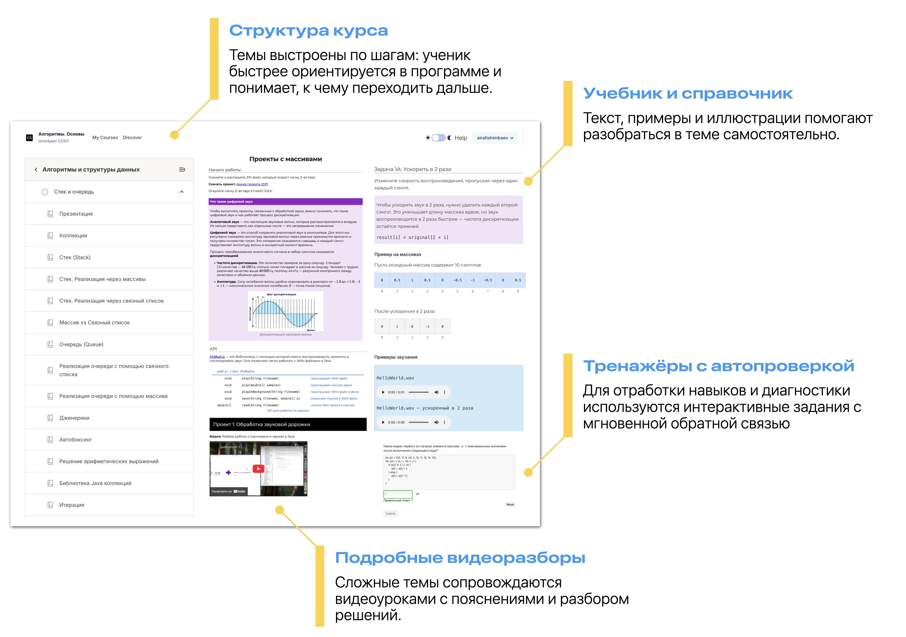
Учебник-справочник дополняет основные материалы на платформе: помогает быстро вспомнить пройденные темы и глубже разобрать текущие. Он открыт для всех, доступен в любое время и работает без регистрации.
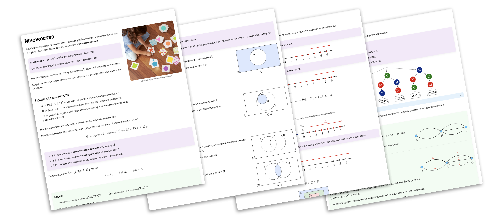
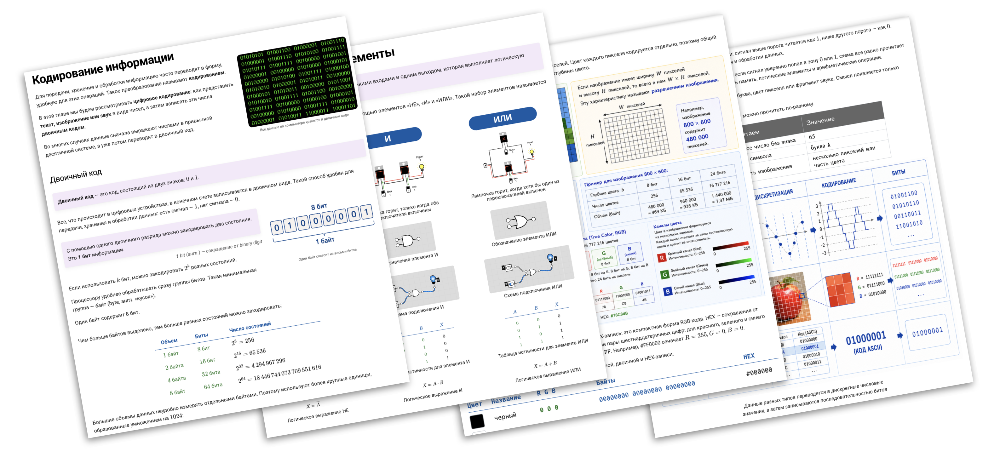
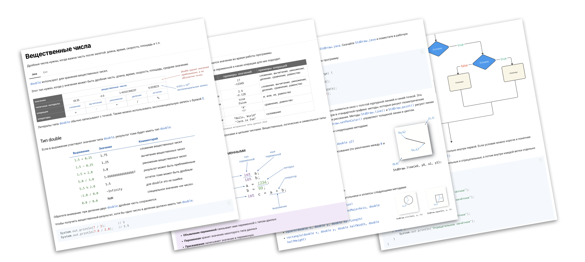
Некоторые главы находятся на стадии разработки, поэтому содержание будет меняться и дополняться со временем.
Занятия строятся вокруг деятельности учеников с минимальной лекционной частью, с упором на практику и при активной поддержке преподавателя.
Ключевые навыки отрабатываются через решение большого количества задач с градацией сложности от легких до олимпиадного уровня.
Для предоставления быстрой обратной связи используются различные системы автоматической проверки заданий.
В программе рассматривается множество примеров и проектов из реальной жизни, ИТ-индустрии и применения в науке.
Чтобы у учеников получалось создавать собственные сложные проекты, в программу включены темы структурного программирования, декомпозиции сложных задач, модульной разработки и тестирования, а также управления проектами.
Для облегчения понимания сложных концепций применяется компетентностный подход: следующая тема проходится только после закрепления предыдущих.
Занятия проходят онлайн по четкому расписанию, с живым участием преподавателя и возможностью настроить темп под цель, уровень и расписание ученика.
3 слота в неделю
3 блока по 40 минут
Ученик подключается в Zoom с демонстрацией экрана и работает на платформе: проходит материалы, решает задачи и выполняет проекты. Преподаватель помогает, проверяет задания и следит за темпом.
3000 ₽ за занятие
В конце месяца родители получают счет и краткий отчет о прогрессе ребенка. Платформа, учебник, тренажеры и проверяемые задачи входят в стоимость.
Оплата только за фактически проведенные занятия.
Курс состоит из модулей, каждый из которых предполагает от 4 до 8 занятий.
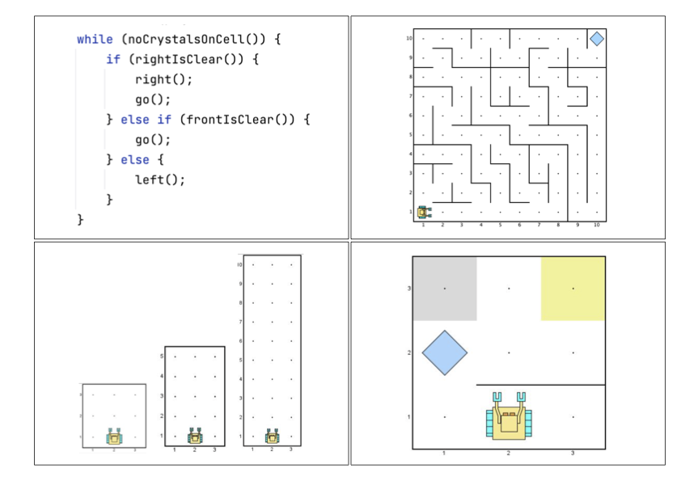
По окончанию модуля вы сможете:
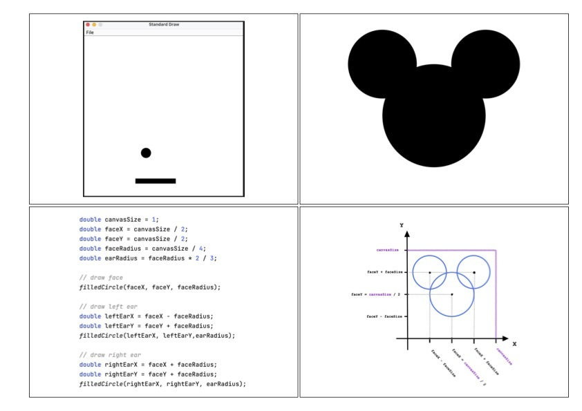
По окончанию модуля вы сможете:
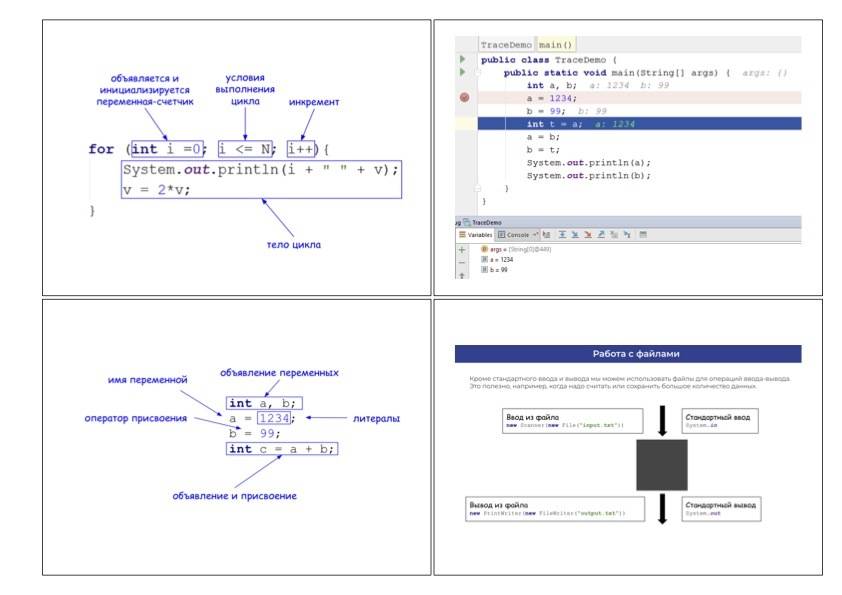
По окончанию модуля сможете:
По окончанию модуля вы сможете:
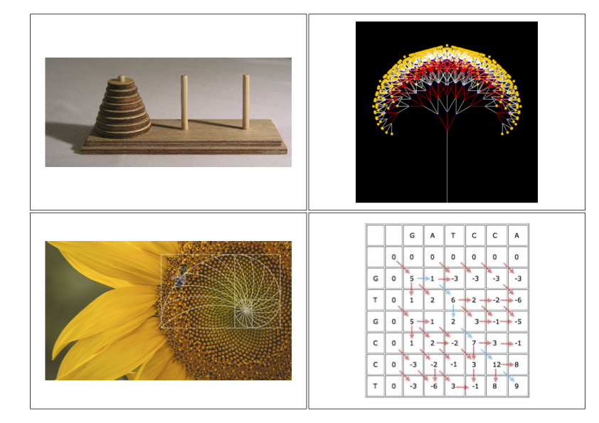
По окончанию этого модуля вы сможете:
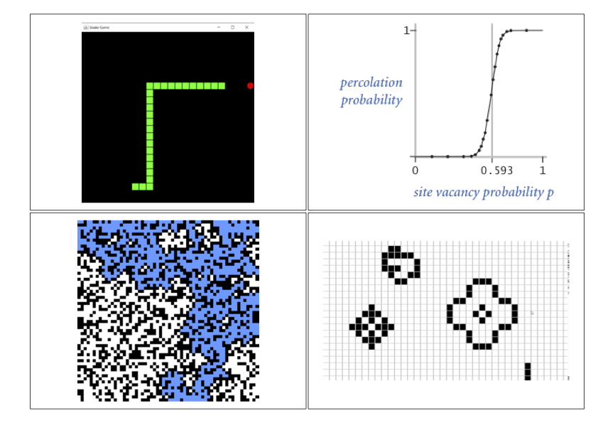
В этом модуле вы будете заниматься разработкой трех проектов. Каждый из них направлен на практическое применение и закрепление навыков, полученных в предыдущих модулях, таких как работа с массивами, графика и функции.
Эти проекты помогут глубже понять важные концепции программирования и научиться использовать их для решения реальных задач в области моделирования.
Вы научитесь моделировать явление перколяции, которое описывает прохождение жидкости или газа через пористую среду. Вы будете использовать метод Монте-Карло, статистический метод, позволяющий анализировать сложные системы с использованием случайных выборок.
Вы создадите клеточный автомат для моделирования игры "Жизнь", знаменитого математического эксперимента, который исследует динамику населения. В этом проекте вы определите правила рождения, выживания и смерти клеток, создадите интерфейс и визуализацию для наблюдения за эволюцией системы.
Вы разработаете классическую аркадную игру "Змейка".
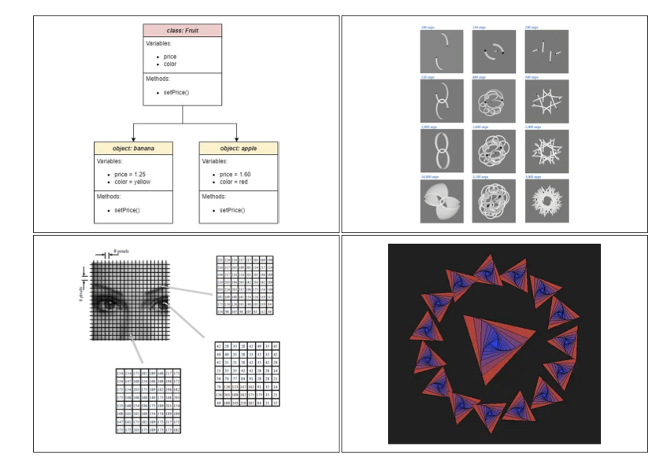
В этом модуле вы познакомитесь с базовыми принципами ООП, важной концепцией, которая позволит понимать, использовать и создавать сложные программные структуры — фундамент современной программной инженерии.
По окончанию этого модуля вы сможете:
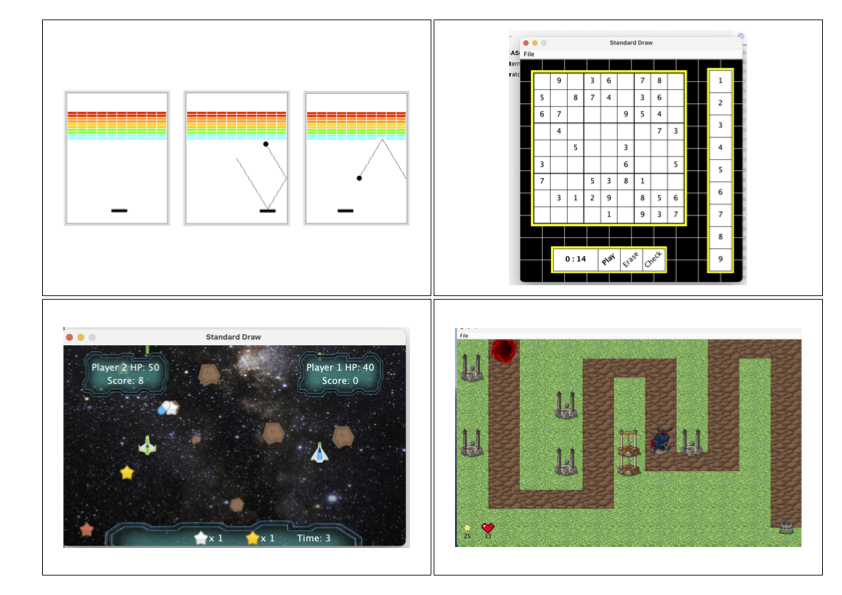
В этом модуле вы разработаете игру Breakout, чтобы применить на практике принципы декомпозиции, модульности, ООП и структурного программирования для создания сложных программных продуктов.
Затем вам будет предложено модифицировать и добавить новые механики в игру.
В заключение вы попробуете разработать свою собственную игру или приложение с последующей презентацией группе.
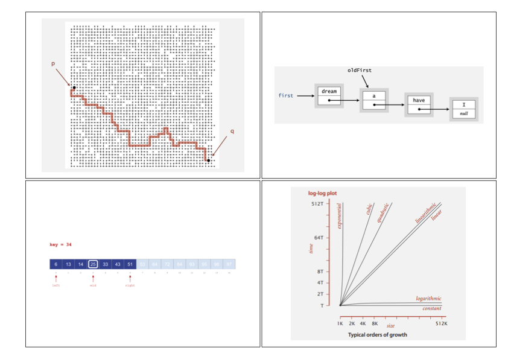
Изучение алгоритмов и структур данных критически важно для эффективного решения задач в программировании. Эти кирпичики позволяют создавать оптимизированные, быстрые и надежные приложения. Практическое применение этих навыков широко: от создания поисковых движков и социальных сетей до анализа больших данных и искусственного интеллекта.
По окончанию модуля вы сможете:
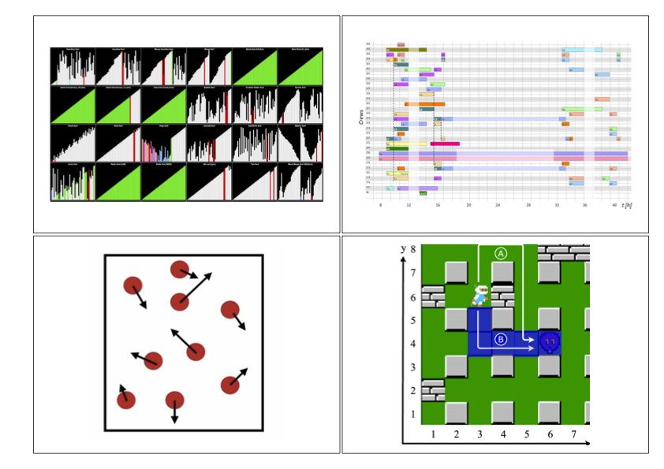
Алгоритмы сортировки широко используются в реальном мире: в операционных системах, базах данных, финансовом анализе, статистике, сетевых алгоритмах, физических симуляциях и сжатии данных.
На примере сортировок вы научитесь оценивать и сравнивать эффективность алгоритмов по производительности и потреблению памяти.
По окончанию модуля вы сможете:
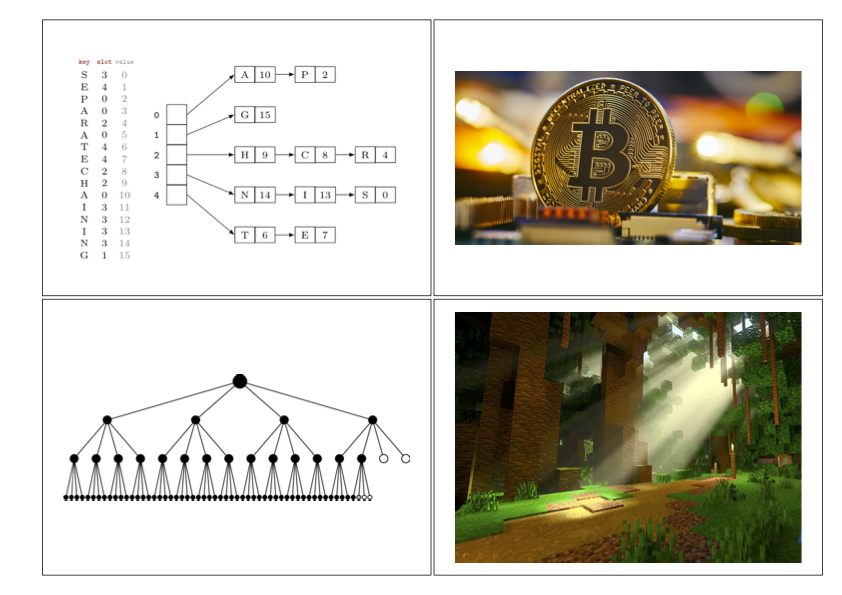
Структуры данных, такие как ассоциативные массивы, деревья и хеш-таблицы, являются основой для эффективного поиска и хранения информации. Они используются в банковских системах, медицине, криптовалютах, машинном обучении, информационной безопасности, компьютерной графике и разработке игр.
По окончанию модуля вы сможете:
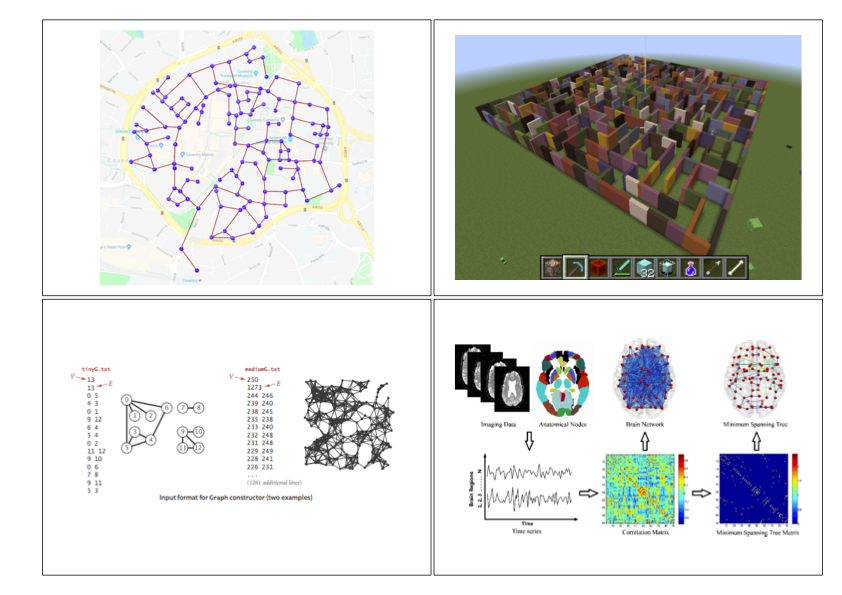
Графы используются в самых разных областях: от оптимизации маршрутов в транспортных сетях до анализа социальных связей. В этом модуле вы освоите алгоритмы поиска в графах, научитесь строить минимальные остовные деревья и оптимизировать поиск кратчайших путей.
По окончанию модуля вы сможете:
Да, занятия идут круглый год, поэтому можно начать в любую неделю. Ученик стартует со своего текущего уровня.
Не обязательно. На первом занятии смотрим текущую подготовку и подбираем стартовые темы. Важно, чтобы ребенку были интересны задачи, программирование и математика.
Каждый получает задачи своего уровня и помощь преподавателя.
Можно заниматься от одного до трех раз в неделю. Нагрузка зависит от цели, расписания и готовности ученика работать между занятиями.
Ученик работает на платформе: читает теорию, решает задачи, проходит тренажеры и получает автопроверку решений.
По вопросам можно написать автору курса напрямую в Telegram: aishimbaev или заполнить форму в конце страницы, чтобы с вами связались для обсуждения времени консультации.
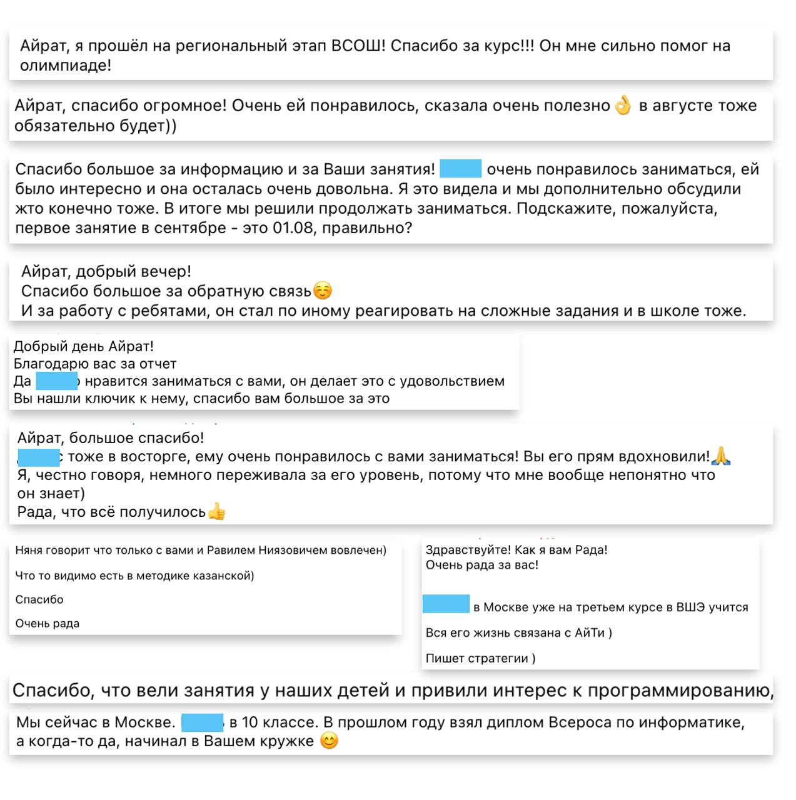
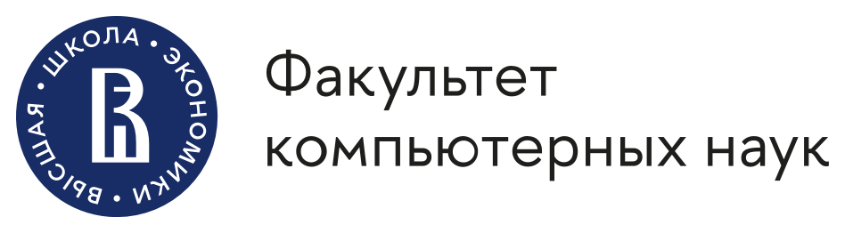
Оставьте имя и контакт для связи. Я свяжусь с вами, чтобы обсудить детали занятий.